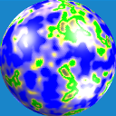

Mercator-Projektion für generierte Planeten

Nachdem ich neulich endlich auch die dreidimensionale Generierung von Spielwelten erfolgreich ausprobiert hatte, entwickelten sich notgedrungen neue Ideen für weitere Forschungen - eine davon möchte ich hier vorstellen:
Nach dem Artikel zum Thema Mercator in der Wikipedia war ich in der Lage, entsprechende Karten meiner generierten Planeten zu generieren - hier ein Beispiel dazu:
Screenshots
{kind=link}
{kind=link}
{kind=link}
Artikel, die hierher verlinken
Performanceoptimierung Mercatorprojektion
02.06.2017
Nachdem ich neulich die dreidimensionale Generierung von Spielwelten durch eine Mercatorprojektion auch in der zweiten Dimension abgebildet hatte, machte ich mir einige Gedanken zur Performance der Generierung...


Vor 5 Jahren hier im Blog
-
Meine Favoriten aus dem 33C3
05.11.2017
Wie jedes Jahr freue ich mich auch dieses Jahr wieder auf den Jahreswechsel - aus diversen Gründen, die auch anderen vertraut sind und aus einem eher nerdigen: der Chaos Communication Congress wartet wieder mit jeder Menge interessanten Vorträgen auf. Aus diesem Grund hier eine Liste mit meinen Favoriten aus dem vergangenen Jahr:
Weiterlesen...
Tags
Android Basteln C und C++ Chaos Datenbanken Docker dWb+ ESP Wifi Garten Geo Git(lab|hub) Go GUI Gui Hardware Java Jupyter Komponenten Komponenten Git(lab|hub) Links Linux Markdown Markup Music Numerik PKI-X.509-CA Python QBrowser Rants Raspi Revisited Security Software-Test sQLshell TeleGrafana Verschiedenes Video Virtualisierung Windows Upcoming...
Neueste Artikel
- EpochDateFormat.java
Nachdem ich neulich festgestellt habe - voller Verwunderung festgestellt - dass es keine Möglichkeit gibt, mittels der in Java zur Verfügung stehenden DateFormat-Implementierungen Unix-Epochs zu parsen und zu erzeugen, musste ich selbst zur Tastatur greifen...
Weiterlesen... - "Funktionale" Programmierung in dWb+
Nach meinem letzten Artikel zum Thema dWb+ ist bereits einige Zeit vergangen. Ich habe lange überlegt, wie ich eine Anwendung schreiben könnte, die mir gestattet, mit einem System herumzuspielen, das ich aus dem Buch von Prof.Strogatz kannte.
Weiterlesen... -
 Tail -f ist eine schlechte Idee
Tail -f ist eine schlechte Idee
In meinem $dayjob musste ich vor einigen Monaten einmal einen Bug untersuchen. Das hat eine (für mich) überraschenende Tatsache ans Licht gebracht und mich wieder daran erinnert, was ich zum Thema Forensik gelernt habe: Man braucht Zeit und Ruhe, um das Problem und die hinterlassenen Zeichen gründlich zu untersuchen und so zum Kern des Problems vorzudringen.
Weiterlesen...
Manche nennen es Blog, manche Web-Seite - ich schreibe hier hin und wieder über meine Erlebnisse, Rückschläge und Erleuchtungen bei meinen Hobbies.
Wer daran teilhaben und eventuell sogar davon profitieren möchte, muß damit leben, daß ich hin und wieder kleine Ausflüge in Bereiche mache, die nichts mit IT, Administration oder Softwareentwicklung zu tun haben.
Ich wünsche allen Lesern viel Spaß und hin und wieder einen kleinen AHA!-Effekt...
PS: Meine öffentlichen GitHub-Repositories findet man hier.